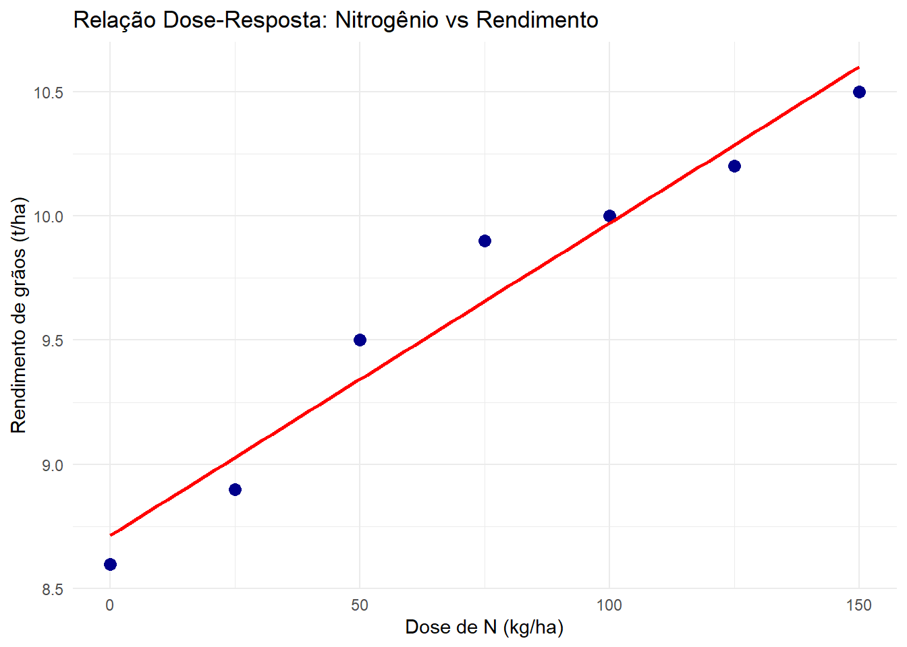
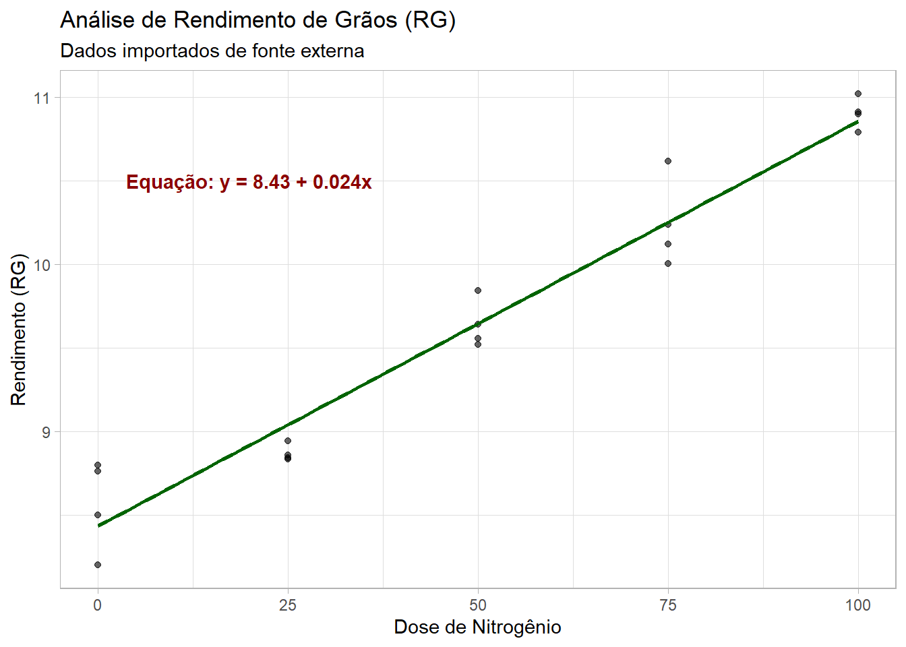
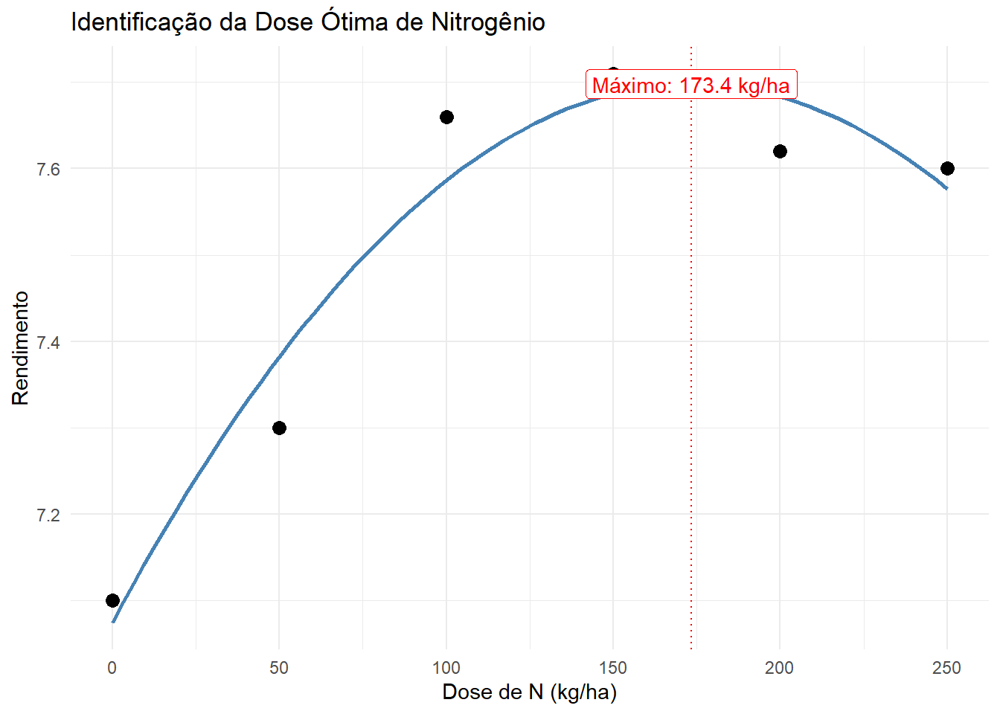
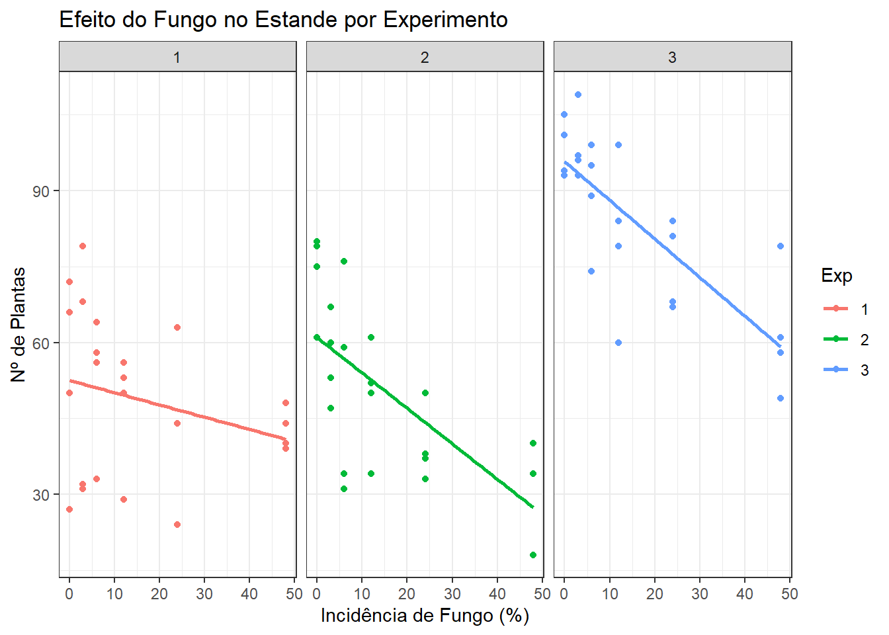
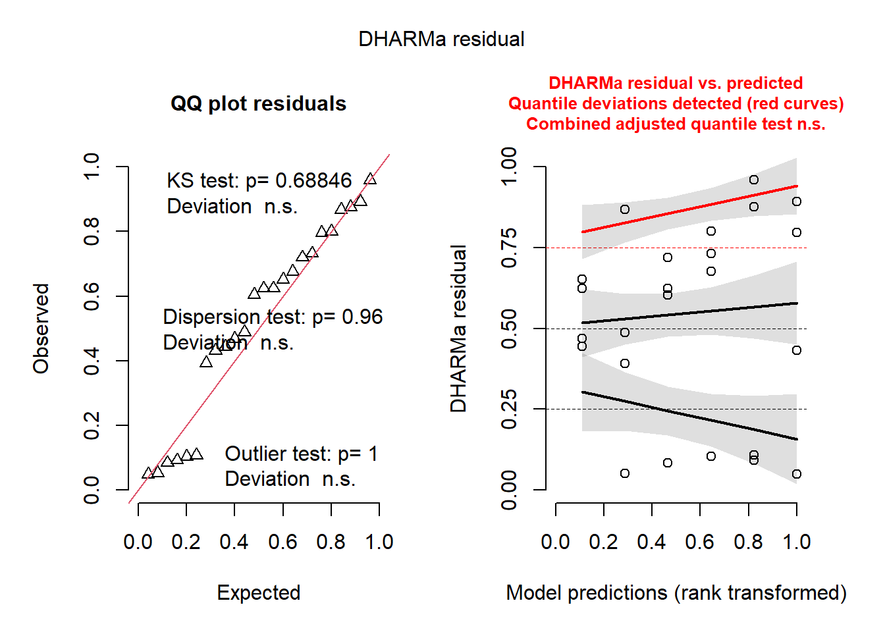

Nesta aula, abordaremos diferentes abordagens para modelar a relação entre variáveis experimentais. Começaremos com a Regressão Linear Simples, passaremos por Modelos Polinomiais (Quadráticos) para identificar pontos de máxima resposta e, finalmente, exploraremos Modelos Mistos (Mixed Models) para lidar com dados provenientes de múltiplos experimentos.
1. Regressão Linear Simples
A regressão linear é utilizada quando supomos que a relação entre a variável independente (\(x\)) e a dependente (\(y\)) segue uma linha reta. No exemplo abaixo, analisamos como a dose de Nitrogênio influencia o rendimento de grãos.
Code
# Carregamento de bibliotecaslibrary(ggplot2)library(dplyr)# Criação do conjunto de dados experimentaldf <-data.frame(x =seq(0, 150, by =25),y =c(8.6, 8.9, 9.5, 9.9, 10, 10.2, 10.5))# Visualização da tendência linearggplot(df, aes(x = x, y = y)) +geom_point(size =3, color ="darkblue") +geom_smooth(method ="lm", se =FALSE, color ="red") +labs(title ="Relação Dose-Resposta: Nitrogênio vs Rendimento",x ="Dose de N (kg/ha)",y ="Rendimento de grãos (t/ha)" ) +theme_minimal()

Ajuste e Predição
O modelo é ajustado usando a função lm(). Uma das grandes utilidades da regressão é a predição. Podemos estimar o rendimento para uma dose que não foi testada originalmente (ex: 200 kg/ha).
Code
# Ajuste do modelo linearm1 <-lm(y ~ x, data = df)# Predição para x = 200pred_200 <-predict(m1, data.frame(x =200))# Visualização dos resíduos (diferença entre o observado e o predito)df_analise <- df |>mutate(predito =predict(m1),residual = y - predito )knitr::kable(df_analise, caption ="Valores Observados, Preditos e Resíduos")
Valores Observados, Preditos e Resíduos
x
y
predito
residual
0
8.6
8.714286
-0.1142857
25
8.9
9.028571
-0.1285714
50
9.5
9.342857
0.1571429
75
9.9
9.657143
0.2428571
100
10.0
9.971429
0.0285714
125
10.2
10.285714
-0.0857143
150
10.5
10.600000
-0.1000000
Code
summary(m1)
Call:
lm(formula = y ~ x, data = df)
Residuals:
1 2 3 4 5 6 7
-0.11429 -0.12857 0.15714 0.24286 0.02857 -0.08571 -0.10000
Coefficients:
Estimate Std. Error t value Pr(>|t|)
(Intercept) 8.714286 0.110472 78.88 6.2e-09 ***
x 0.012571 0.001226 10.26 0.000151 ***
---
Signif. codes: 0 '***' 0.001 '**' 0.01 '*' 0.05 '.' 0.1 ' ' 1
Residual standard error: 0.1621 on 5 degrees of freedom
Multiple R-squared: 0.9546, Adjusted R-squared: 0.9456
F-statistic: 105.2 on 1 and 5 DF, p-value: 0.0001513
2. Importação de Dados e Anotação Gráfica
Muitas vezes precisamos importar dados externos e apresentar a equação do modelo diretamente no gráfico para facilitar a interpretação.
Code
library(rio)
Warning: pacote 'rio' foi compilado no R versão 4.4.3
Code
# Importação de dados de repositório externourl <-"https://bit.ly/df_biostat"df_reg <-import(url, sheet ="REG_DEL_DATA", setclass ="tbl")# Gráfico com a equação da reta anotadadf_reg |>ggplot(aes(DOSEN, RG)) +geom_point(alpha =0.6) +geom_smooth(se =FALSE, method ="lm", color ="darkgreen") +annotate(geom ="text", x =20, y =10.5, label ="Equação: y = 8.43 + 0.024x", color ="darkred", fontface ="bold") +labs(title ="Análise de Rendimento de Grãos (RG)",subtitle ="Dados importados de fonte externa",x ="Dose de Nitrogênio", y ="Rendimento (RG)") +theme_light()

3. Regressão Quadrática e Ponto de Máximo
Na biologia, nem tudo é linear. Frequentemente, o aumento de uma dose (como fertilizante) aumenta o rendimento até certo ponto, a partir do qual ele se estabiliza ou cai (toxicidade/excesso). Para isso, usamos um modelo polinomial de 2º grau.
Por que calcular o ponto de máximo?
Saber a “Dose Ótima” é crucial para a economia do produtor e a sustentabilidade ambiental. O ponto de máximo é o vértice da parábola, calculado por \(x = -b / 2a\).
Code
# Dados simulando resposta não-lineardf_quad <-data.frame(DOSEN =c(0, 50, 100, 150, 200, 250),RG =c(7.1, 7.3, 7.66, 7.71, 7.62, 7.6))# Ajuste do modelo quadrático: y ~ x + x^2m_quad <-lm(RG ~poly(DOSEN, 2, raw =TRUE), data = df_quad)coeffs <-coef(m_quad)# Cálculo matemático do vérticea <- coeffs[3]; b <- coeffs[2]; c <- coeffs[1]x_max <--b / (2* a)y_max <-predict(m_quad, newdata =data.frame(DOSEN = x_max))# Visualização sofisticadaggplot(df_quad, aes(DOSEN, RG)) +geom_point(size =3) +geom_smooth(method ="lm", se =FALSE, formula = y ~poly(x, 2), color ="steelblue") +geom_vline(xintercept = x_max, linetype ="dotted", color ="red") +annotate("label", x = x_max, y = y_max, label =paste0("Máximo: ", round(x_max, 1), " kg/ha"),fill ="white", color ="red") +labs(title ="Identificação da Dose Ótima de Nitrogênio",x ="Dose de N (kg/ha)", y ="Rendimento") +theme_minimal()

4. Análise de Múltiplos Experimentos (Estande de Plantas)
Neste estudo de caso, analisamos como a incidência de um fungo afeta o estande de plantas em três experimentos diferentes.
Transformação de Dados
Muitas vezes os dados de contagem (como número de plantas) não atendem aos pressupostos da regressão (como a normalidade dos resíduos). Nesses casos, aplicamos uma transformação (raiz quadrada) para estabilizar a variância.
Code
library(readxl)
Warning: pacote 'readxl' foi compilado no R versão 4.4.3
Code
library(DHARMa)
Warning: pacote 'DHARMa' foi compilado no R versão 4.4.3
Code
estande <-read_excel("dados_diversos.xlsx", "estande")# Comparação visual entre os 3 experimentosggplot(estande, aes(x = trat, y = nplants, color =factor(exp))) +geom_point() +geom_smooth(method ="lm", se =FALSE) +facet_wrap(~exp) +labs(title ="Efeito do Fungo no Estande por Experimento",x ="Incidência de Fungo (%)", y ="Nº de Plantas", color ="Exp") +theme_bw()

Validação com DHARMa
O pacote DHARMa é excelente para verificar se o modelo é válido. Ele simula resíduos para verificar problemas de distribuição.
Code
# Exemplo com Experimento 1exp1 <- estande |>filter(exp ==1)m_exp1 <-lm(sqrt(nplants) ~ trat, data = exp1)# Resumo e Validaçãosummary(m_exp1)
Call:
lm(formula = sqrt(nplants) ~ trat, data = exp1)
Residuals:
Min 1Q Median 3Q Max
-1.9397 -0.4386 0.1782 0.6684 1.7986
Coefficients:
Estimate Std. Error t value Pr(>|t|)
(Intercept) 7.13583 0.30907 23.088 <2e-16 ***
trat -0.01540 0.01367 -1.127 0.272
---
Signif. codes: 0 '***' 0.001 '**' 0.01 '*' 0.05 '.' 0.1 ' ' 1
Residual standard error: 1.103 on 22 degrees of freedom
Multiple R-squared: 0.05455, Adjusted R-squared: 0.01157
F-statistic: 1.269 on 1 and 22 DF, p-value: 0.2721
Code
plot(simulateResiduals(m_exp1))

5. Modelos Mistos (O Poder da Generalização)
Em vez de analisar cada experimento separadamente, podemos usar Modelos Mistos. Eles permitem que consideremos “Experimento” e “Bloco” como efeitos aleatórios. Isso é mais eficiente pois usamos todos os dados em um único modelo, mantendo a estrutura hierárquica do experimento.
Code
library(lme4)
Warning: pacote 'lme4' foi compilado no R versão 4.4.3
Code
library(car)# Ajuste do modelo de efeitos mistos# nplants ~ trat: Efeito fixo (nosso foco)# (1 | exp/bloco): Efeito aleatório (variação entre experimentos e blocos)m_mix <-lmer(nplants ~ trat + (1| exp/bloco), data = estande)# Teste de significância global para o tratamentoAnova(m_mix)
Script organizado e comentado para fins didáticos. Foco em fluidez narrativa e rigor estatístico.
Conclusão e Importância
Neste script, percorremos uma jornada completa pela modelagem estatística aplicada à fitopatologia:
Exploração e Predição: Vimos como a regressão linear simples permite não apenas descrever tendências, mas estimar resultados em cenários não testados.
Otimização Biológica: Através do modelo quadrático, aprendemos a encontrar a “dose ótima”, um conceito fundamental para maximizar a produtividade e reduzir custos e impactos ambientais.
Rigor Científico: Discutimos a importância das transformações de dados (sqrt) e da validação de pressupostos (através do pacote DHARMa), garantindo que nossas conclusões não sejam artefatos de erros de cálculo ou distribuições inadequadas.
Complexidade Experimental: Introduzimos os Modelos Mistos, uma ferramenta poderosa e moderna para analisar dados que possuem hierarquias (como múltiplos blocos e experimentos), permitindo conclusões mais robustas e generalizáveis.
A importância deste script reside na transição de uma análise meramente descritiva para uma análise preditiva e decisória. Em fitopatologia, dominar estas técnicas permite ao pesquisador e ao agrônomo tomar decisões baseadas em evidências, seja na recomendação de fungicidas, na adubação de culturas ou no entendimento da dinâmica de doenças no campo.